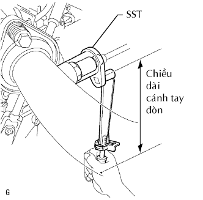
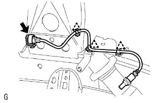

CẢM BIẾN ÔXY CÓ BỘ SẤY > LẮP |
| 1. LẮP CẢM BIẾN ÔXY CÓ SẤY (cho Thân máy 1 Cảm biến 1) |
|  |
Dùng SST, lắp cảm biến.
|  |
Cài khớp 3 kẹp dây điện lên thân xe.
Nối giắc cảm biến.
| 2. NỐI CÁP ÂM VÀO ẮC QUY |
| 3. TIẾN HÀNH THIẾT LẬP BAN ĐẦU |
Tiến hành thiết lập ban đầu (Xem trang Kích chuột vào đây).